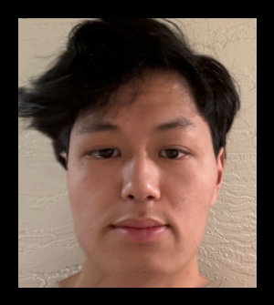

CS 180 Project 3: Face Morphing
Exploring Face Morphing Techniques
Your Name
Introduction
In this project, we explored face morphing techniques by producing a morph animation between two faces.
We also computed the mean of a population of faces and extrapolated a caricature from the mean. Face morphing
is achieved by warping the image shape and cross-dissolving the colors between two faces. The warp is controlled
by defining correspondences between facial features, such as the eyes, nose, mouth, and ears.

Joker's Face
Defining Correspondences
To achieve a smooth transformation, I defined correspondences between my face and the target face. Key points
such as the eyes, nose, mouth, and chin were manually marked on both images. The corresponding points ensure
that the transformation maps the facial features correctly, resulting in a smooth morphing process.

My Face with Correspondence Points

Midway Delauney Triangulation

Joker's Face with Correspondence Points
Computing the "Mid-way Face"
After defining correspondences, I computed the mid-way face. The mid-way face is a combination of both the geometry
and colors of the two images, taking the average shape of the two faces and blending their pixel intensities.
This produces a face that is an equal mix of both input images.

Midway Face
Joker's Face
The Morph Sequence
The morph sequence is the animation of my face transforming into the target face.
This animation consists of 45 frames where frame 0 is my original face and frame 45 is the target face.
Below is the animation in .gif format.
The "Mean Face" of a Population
I computed the mean face from a population of faces by averaging their shapes and pixel intensities.
Below are some sample images from the population, followed by the computed mean face.

Dane 1

Dane 2

Dane 3

Dane 1 Morphed to Average
Dane 2 Morphed to Average

Dane 3 Morphed to Average

Mean Face of Population

My Face Morphed to Average Dane

Average Dane Morphed to My Face
Caricatures: Extrapolating from the Mean
To create caricatures, I extrapolated from the mean face by amplifying the differences between my face
and the population mean. Below are my face and the exaggerated caricature.

Your Face

Caricature of Your Face
Changing Genders
Finally, I explored gender morphing by blending my face with a male and female population mean.
Below is the result of morphing my face into the male and female means, as well as some intermediate stages.
Your Face

Female Mean